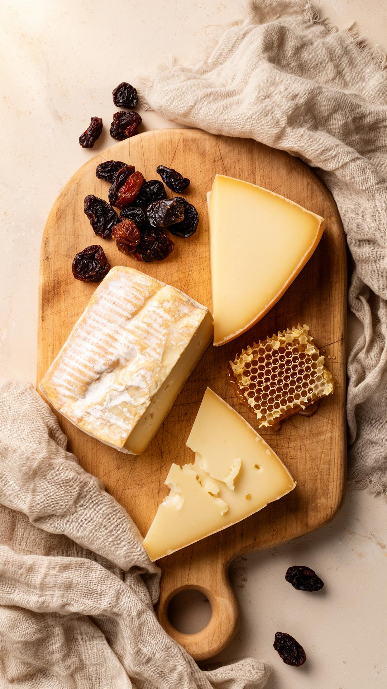

Where It Began
A Small Shop,
an Enormous Dream
Maison Fromagerie was born in 2011 from a single cave, a single family, and a conviction that industrialised cheese had gone too far. Our founders — Thomas and Élise Moreau — left careers in Parisian hospitality to return to Thomas's family dairy in the Jura highlands, armed with nothing but a modest inheritance, obsessive curiosity, and twelve wheels of hand-pressed Comté.
What started as a weekend market stall became a full cave-aging programme within two years, then a wholesale partnership with three Michelin-starred restaurants, then the shop you see today. Every decision we have made has followed the same rule: does this make the cheese better, or does it make our lives easier? The answer determines everything.
"We don't sell cheese. We sell time — the months and seasons and turning cycles that transform humble milk into something worth remembering."
— Thomas Moreau, Co-Founder